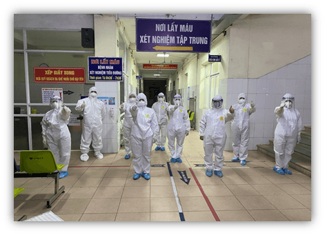

Thủ tướng Phạm Minh Chính gửi thư khen những 'chiến sĩ áo trắng' ở tuyến đầu chống dịch
Thủ tướng Chính phủ Phạm Minh Chính vừa gửi thư biểu dương, đánh giá cao những cống hiến, nỗ lực không mệt mỏi, tận tâm tận lực, không quản ngại vất vả, gian nan và hiểm nguy của đội ngũ cán bộ y tế chống dịch thời gian qua.

Các chiến sĩ áo trắng của tỉnh Bắc Ninh tại nơi lấy mẫu xét nghiệm tập trung
Cổng Thông tin điện tử Sở Giáo dục và Đào tạo Bắc Ninh trân trọng giới thiệu toàn văn nội dung thư của Thủ tướng Chính phủ:
Thân ái gửi: Các thầy thuốc, cán bộ, nhân viên ngành y tế
COVID-19 là đại dịch đặc biệt nguy hiểm với tốc độ lây lan nhanh, diễn biến khó lường đã và đang gây ra cuộc khủng hoảng y tế và những hậu quả về kinh tế - xã hội rất nghiêm trọng trên phạm vi toàn cầu, tác động mạnh đến hầu hết mọi mặt đời sống xã hội của nước ta. Đợt dịch bùng phát ở nước ta từ cuối tháng 4 năm 2021 đến nay với những biến chủng mới có tốc độ lây nhiễm nhanh hơn, mạnh hơn, khó kiểm soát và nguy hiểm hơn đã xuất hiện ở nhiều địa phương. Phát huy những bài học kinh nghiệm chống dịch trước đây, cùng với những biện pháp phù hợp, sáng tạo, kịp thời của các cấp lãnh đạo, của toàn dân, toàn quân, đến nay chúng ta vẫn cơ bản kiểm soát được tình hình; kinh tế, xã hội tiếp tục phát triển. Đặc biệt, chúng ta đã tổ chức thành công rất tốt đẹp và an toàn ngày Bầu cử đại biểu Quốc hội và đại biểu Hội đồng nhân dân các cấp nhiệm kỳ 2021-2026 với 99,57% cử tri cả nước tham gia bầu cử trong điều kiện phải tiến hành đồng thời việc đẩy mạnh chống dịch COVID-19.
Có được những kết quả đó là nhờ có sự lãnh đạo, chỉ đạo đúng đắn, kịp thời, quyết liệt của Bộ Chính trị, Ban Bí thư, Thường trực Ban Bí thư, Chủ tịch nước, Hội đồng bầu cử quốc gia, của Chính phủ, Thủ tướng Chính phủ, Ban Chỉ đạo Quốc gia phòng chống dịch COVID-19; sự nỗ lực vượt khó, tinh thần đoàn kết, ý chí vươn lên của Nhân dân cả nước, sự vào cuộc chủ động, tích cực của các cấp, các ngành và cả hệ thống chính trị, trong đó có sự cống hiến, hy sinh, lăn xả quên mình của các lực lượng tuyến đầu chống dịch, như quân đội, công an, ngoại giao, giao thông vận tải, các tình nguyện viên, đặc biệt là đội ngũ thầy thuốc, cán bộ, nhân viên y tế, một lực lượng tiên phong, xông pha trên mặt trận chống dịch.
Chúng ta không thể nào quên những hình ảnh cảm động của những bác sĩ, nhân viên y tế phải gác lại mọi riêng tư, chấp nhận những hy sinh cá nhân, tận tình, chu đáo chăm sóc người bệnh; hay những khoảnh khắc, hành động cao đẹp lay động lòng người của những “chiến sĩ áo trắng” trong điều kiện thời tiết khắc nghiệt của mùa hè oi nóng, dù đã kiệt sức nhưng quyết bám trụ, chiến đấu với dịch bệnh, tất cả vì sức khoẻ của người dân, của cộng đồng ...
Thay mặt lãnh đạo Đảng, Nhà nước, Thủ tướng Chính phủ ghi nhận, biểu dương và đánh giá cao những cống hiến, nỗ lực không mệt mỏi, tận tâm tận lực, không quản ngại vất vả, gian nan và hiểm nguy của đội ngũ cán bộ y tế chống dịch thời gian qua. Chiến trường nào cũng gian khổ, trận chiến nào cũng có những mất mát hy sinh; các anh, các chị và các bạn thực sự là những “chiến sĩ áo trắng” đang dấn thân thực hiện sứ mệnh cao cả của mình như lời dạy của Bác Hồ kính yêu: “Lương y phải như từ mẫu”, “… thương yêu săn sóc người bệnh như anh em ruột thịt của mình, coi họ đau đớn cũng như mình đau đớn…”.
Trước tình hình dịch bệnh vẫn diễn biến hết sức phức tạp, luôn thường trực nguy cơ bùng phát bất cứ lúc nào, đe dọa thành quả phòng, chống dịch và phát triển kinh tế - xã hội của chúng ta, tôi tin tưởng rằng toàn thể thầy thuốc, cán bộ, nhân viên y tế trên toàn quốc, cùng nhân dân cả nước và các lực lượng chức năng sẽ phát huy tinh thần, khí thế và những kinh nghiệm quý báu trong thời gian qua, quyết tâm cao hơn, nỗ lực lớn hơn, hành động quyết liệt, mạnh mẽ, hiệu quả hơn và sự hy sinh có thể phải nhiều hơn nữa để cùng cả nước sớm đẩy lùi dịch bệnh.
Thân ái chúc các thầy thuốc của nhân dân và đội ngũ cán bộ, nhân viên y tế dồi dào sức khỏe, hạnh phúc, thành công và luôn hoàn thành xuất sắc nhiệm vụ cao cả của mình, xứng đáng với sự tin yêu của Đảng, Nhà nước và Nhân dân cả nước.
Thân ái
Phạm Minh Chính